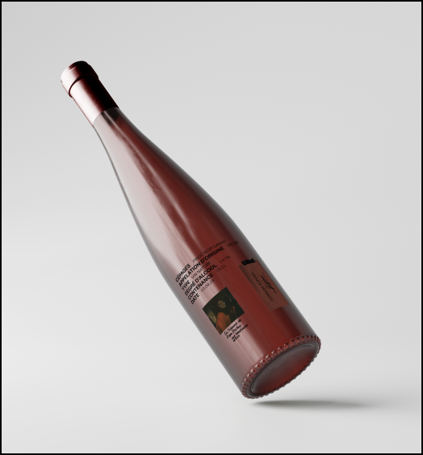
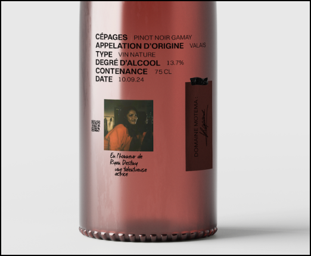
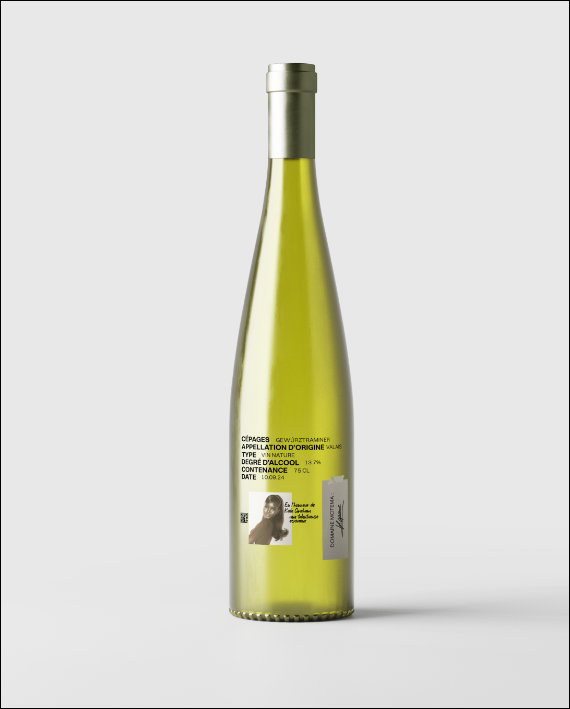
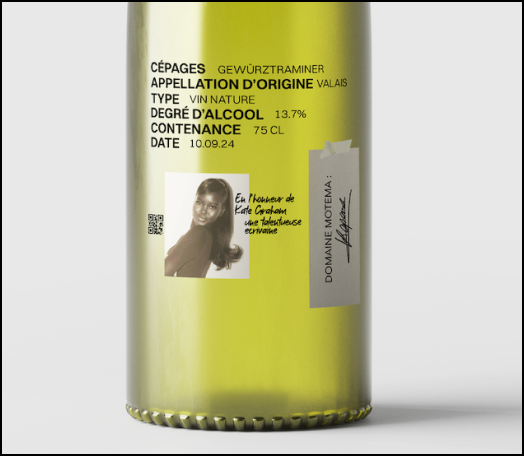

Ryan Destiny
Pinot noir gamay
Ajouter au panier


Cépage
Pinot noir et gamay
Milésime actuel
2022
Premier Milésime
2003
Provenance
Sélection des Coteaux de Sierre, Valais, Suisse
Vinification
Fermentation en cuve inox pour préserver la fraîcheur et les arômes
fruités. Élevage en fûts de chêne pendant 12 mois pour le Pinot
Noir, et 6 mois en cuve inox pour le Gamay, avant assemblage final.
NOTE DE DéGUSTATION
Ce vin rouge dévoile des arômes de fruits rouges croquants (cerise,
framboise) et de sous-bois, relevés par une touche épicée et
légèrement boisée. En bouche, il est souple et fruité, avec des
tanins fins et une belle fraîcheur qui offre une finale élégante et
persistante.
ACCORDS METS ET VINS
Le Pinot Noir - Gamay du Valais accompagne à merveille une terrine
de campagne, une quiche lorraine ou un poulet rôti. Il se marie
aussi bien avec une Tomme de Savoie ou une tarte aux fruits rouges
pour une touche finale gourmande.
TEMPéRATURE DE SERVICE
14-16°C
POTENTIEL DE GARDE
3 à 5 ans
Pourrait aussi vous plaire

Kate Graham
Gewürztraminer
